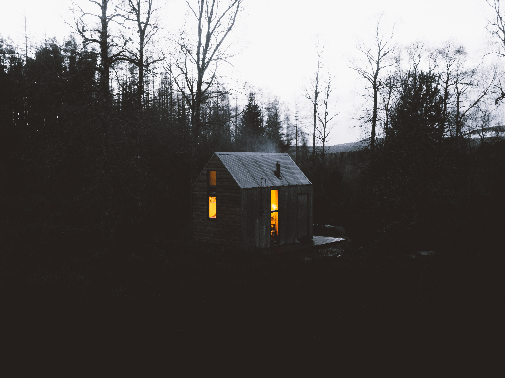

What is Shelter?
Shelter는 전국적으로 재난이 일어나고 정부에서 지은 장소로 현재 세상 그 어느 곳보다 안전한 곳으로 불린다. 그 어떤 생존자들 모두가 이곳에 오려고 한다. 약 5M가 넘는 단단한 벽 안에 하나의 도시를 만들어 모든 생존자들에게 편안하고 안전한 생활을 제공한다. Shelter는 Header의 아래에 통솔되고 있으며 Protector로 의해 안전을 보장받고 있다. 하지만 재난 상황인 만큼 보다 엄격한 규칙이 적용되며 이를 어길 경우 강제 진압이 되거나 강제 추방이 될 수 있다. 이는 모든 생존자들의 안전을 위해서이다.
